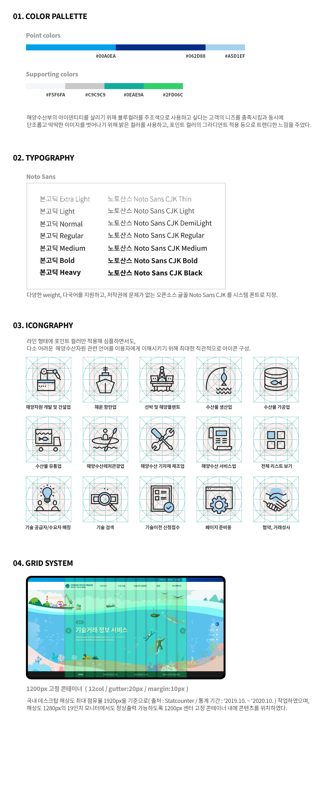

overview
해양수산R&D지식정보시스템 기존 홈페이지 내에 구성 되어 있던 기술거래 메뉴 내 페이지를 [기술거래 플랫폼]으로 독자적으로 구성하였다. 플랫폼으로 구성 하면서 정체성은 잃고 싶지 않다는 고객의 니즈가 있어, 해양수산부의 포인트 컬러인 블루 계열의 컬러를 트렌드한 느낌으로 밝게 변경하여 사용하였고 기존 페이지와 달리 시원하고 확장된 느낌을 주고자 메인페이지는 원페이지 형식으로 구성하였다.CONCEPT
독자적인 플랫폼으로 구성 하지만, 해양수산과학기술진흥원의 정체성을 유지하여 연결된 홈페이지임을 사용자가 인지하도록 구성design guide
